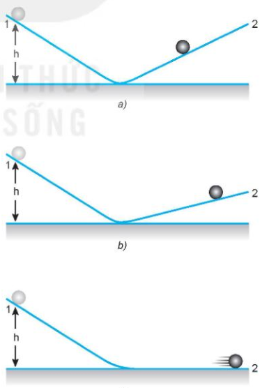
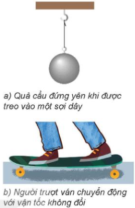
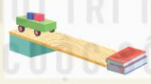
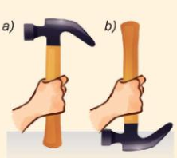
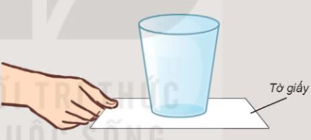

HOẠT ĐỘNG 1:
KHỞI ĐỘNG
(5 phút)
|
Mục tiêu: Tạo hứng thú, dẫn dắt học sinh vào bài mới.
Nội dung: Học sinh quan sát hình ảnh và trả lời câu hỏi.
Sản phẩm: Câu trả lời của học sinh.
Tổ chức thực hiện:
- GV chiếu hình ảnh tàu vũ trụ Voyager (Hình 01.png) hoặc video.
- GV đặt câu hỏi: "Hình bên cho thấy một trong hai con tàu vũ trụ Voyager đang làm nhiệm vụ thăm dò các hành tinh nằm xa Trái Đất trong hệ Mặt Trời. Chúng được phóng lên từ Mũi Canaveral, Florida (Hoa Kì) vào năm 1977 và hiện nay cả hai con tàu đã ra khỏi hệ Mặt Trời, đang tiếp tục hoạt động và gửi thông tin về Trái Đất. Điều gì đã giúp cho tàu Voyager tiếp tục chuyển động rời xa Trái Đất, mặc dù thực tế không còn lực nào tác dụng lên chúng nữa?"
- HS suy nghĩ, trả lời.
- GV nhận xét, dẫn dắt vào bài: "Để trả lời câu hỏi này, chúng ta cùng tìm hiểu Bài 14: Định luật 1 Newton."
Hình ảnh minh họa: Tàu vũ trụ Voyager
|
HOẠT ĐỘNG 2:
HÌNH THÀNH KIẾN THỨC
(25 phút)
|
Mục tiêu: Hình thành khái niệm lực và chuyển động, định luật 1 Newton, quán tính.
Nội dung: Tìm hiểu mối quan hệ giữa lực và chuyển động, định luật 1 Newton, quán tính.
Sản phẩm: Câu trả lời, kết quả thảo luận, công thức.
Tổ chức thực hiện:
1. Lực và chuyển động
- GV yêu cầu HS đọc SGK mục I, thảo luận để trả lời câu hỏi: "Lực có phải là nguyên nhân làm cho một vật chuyển động và duy trì chuyển động đó hay không?"
- HS thảo luận, trả lời theo quan điểm của Aristotle (nếu đặt mình vào thời đó).
- GV giới thiệu thí nghiệm của Galilei (Hình 14.1) và kết luận: Nếu không có ma sát và nếu máng nghiêng 2 nằm ngang thì hòn bi sẽ lăn mãi mãi với vận tốc không đổi.

Hình 14.1. Minh họa thí nghiệm của Galilei
2. Định luật 1 Newton
- GV yêu cầu HS đọc SGK mục II, phát biểu định luật 1 Newton.
- HS trả lời: "Nếu một vật không chịu tác dụng của lực nào hoặc chịu tác dụng của các lực có hợp lực bằng không, thì vật đang đứng yên sẽ tiếp tục đứng yên, đang chuyển động sẽ tiếp tục chuyển động thẳng đều."
- GV nhấn mạnh: Định luật 1 Newton còn được gọi là định luật quán tính.
3. Quán tính
- GV yêu cầu HS đọc SGK mục III.1, nêu khái niệm quán tính.
- HS trả lời: "Tính chất bảo toàn trạng thái đứng yên hay chuyển động của vật, gọi là quán tính của vật."
- GV yêu cầu HS quan sát Hình 14.2 và trả lời câu hỏi:
- Giải thích tại sao quả cầu đứng yên.
- Tại sao người trượt ván có thể giữ nguyên vận tốc của mình?
- HS trả lời: Quả cầu đứng yên vì chịu tác dụng của hai lực cân bằng (trọng lực và lực căng dây). Người trượt ván giữ nguyên vận tốc vì không có lực nào tác dụng hoặc các lực tác dụng cân bằng nhau.

Hình 14.2. Ví dụ về quán tính
4. Thí nghiệm minh họa quán tính
- GV yêu cầu HS quan sát Hình 14.3 và mô tả thí nghiệm.
- HS mô tả: Đặt các vật nhỏ lên xe lăn. Giữ các vật và xe đứng yên trên đỉnh mặt phẳng nghiêng. Thả cho xe trượt xuống dốc, dọc theo mặt phẳng nghiêng. Quan sát hiện tượng xảy ra đối với xe và các vật trên xe.
- GV đặt câu hỏi:
- Giải thích tại sao khi xe trượt xuống dốc và bị cản lại ở cuối dốc thì vật nhỏ bị văng về phía trước.
- Làm thế nào để giữ cho vật trên xe không bị văng đi?
- HS trả lời: Do quán tính, vật nhỏ có xu hướng giữ nguyên vận tốc khi xe dừng lại đột ngột. Để giữ cho vật không bị văng, có thể buộc dây hoặc đặt vật vào hộp có thành chắn.

Hình 14.3. Thí nghiệm minh họa quán tính
5. Ứng dụng của quán tính trong đời sống
- GV yêu cầu HS đọc SGK mục III.2 và trả lời câu hỏi:
- Khi ngồi trên ô tô, tàu lượn cao tốc hoặc máy bay, hành khách luôn được nhắc thắt dây an toàn. Giải thích điều này.
- Để tra đầu búa vào cán, nên chọn cách nào dưới đây? Giải thích tại sao.
- HS trả lời:
- Thắt dây an toàn để giảm tác hại của quán tính khi xe đột ngột dừng lại hoặc thay đổi vận tốc đột ngột.
- Để tra đầu búa vào cán, nên đập mạnh cán búa xuống đất (Hình 14.4a) vì khi cán búa dừng lại đột ngột, đầu búa do quán tính tiếp tục chuyển động xuống và lún sâu vào cán.

Hình 14.4. Cách tra đầu búa vào cán
|
HOẠT ĐỘNG 3:
LUYỆN TẬP
(10 phút)
|
Mục tiêu: Vận dụng định luật 1 Newton và quán tính để giải thích hiện tượng.
Nội dung: Giải bài tập ví dụ SGK.
Sản phẩm: Lời giải của học sinh.
Tổ chức thực hiện:
- GV yêu cầu HS đọc và trả lời câu hỏi 1, 2, 3 trong SGK trang 62.
- HS thực hiện:
- Câu 1: Mô tả và giải thích điều gì xảy ra đối với một hành khách ngồi trong ô tô ở các tình huống:
- a) Xe đột ngột tăng tốc: Hành khách bị ngả về phía sau do quán tính.
- b) Xe phanh gấp: Hành khách bị ngả về phía trước do quán tính.
- c) Xe rẽ nhanh sang trái: Hành khách bị nghiêng sang phải do quán tính.
- Câu 2: Một vật đang chuyển động với vận tốc 3 m/s dưới tác dụng của các lực. Nếu bỗng nhiên các lực này mất đi thì:
- Chọn D. Vật tiếp tục chuyển động theo hướng cũ với vận tốc 3 m/s.
- Câu 3: Một vật đang nằm yên trên mặt bàn nằm ngang. Tại sao ta có thể khẳng định rằng bàn đã tác dụng một lực lên nó?
- Vì vật nằm yên chứng tỏ hợp lực tác dụng lên nó bằng 0. Trọng lực tác dụng lên vật hướng xuống, nên bàn phải tác dụng một lực hướng lên cân bằng với trọng lực.
- GV nhận xét, chính xác hóa kết quả.
|
HOẠT ĐỘNG 4:
VẬN DỤNG
(5 phút)
|
Mục tiêu: Vận dụng kiến thức vào thực tế và giao nhiệm vụ về nhà.
Nội dung: Trả lời câu hỏi vận dụng, giao nhiệm vụ năng lực số.
Sản phẩm: Câu trả lời của học sinh, sản phẩm bảng/đồ thị.
Tổ chức thực hiện:
- GV đặt câu hỏi: "Dùng khái niệm quán tính để giải thích hiện tượng trong Hình 14.5: Khi dùng tay kéo từ từ tờ giấy và khi giật mạnh tờ giấy."
- HS vận dụng kiến thức:
- Khi kéo từ từ tờ giấy, cốc nước chuyển động cùng với tờ giấy do lực ma sát.
- Khi giật mạnh tờ giấy, cốc nước vẫn đứng yên do quán tính (không kịp thay đổi vận tốc).
- GV giao nhiệm vụ về nhà:
- Nhiệm vụ năng lực số (1.1.NC1a): HS tìm kiếm, lựa chọn và khai thác thông tin từ các nguồn số phù hợp để đáp ứng nhu cầu tìm hiểu về Định luật I Newton và quán tính; biết lựa chọn thông tin cần thiết phục vụ nhiệm vụ học tập.
- Nhiệm vụ trực tuyến: Tìm hiểu thêm trên internet về định luật 1 Newton và quán tính để hoàn thiện nội dung học tập.

Hình 14.5. Thí nghiệm về quán tính
|